19. Causal Inference: Mixed Backends with GPD - Amoroso Kernel
Source:vignettes/legacy/v19-causal-different-backends-SB.Rmd
v19-causal-different-backends-SB.RmdLegacy vignette (for the website / historical notes). These files may not match the current exported API one-to-one. Last verified: 2026-01-18.
For the up-to-date workflow, see the main package vignettes (Introduction, Model Spec, MCMC Workflow, Unconditional/Conditional/Causal, Backends, S3 Reference).
Causal Inference: Mixed Backends with GPD - Amoroso Kernel
This vignette fits two mixed-backend causal models with GPD tails and an Amoroso kernel:
- Model A: Treated = SB, Control = CRP
- Model B: Treated = CRP, Control = SB
We shift y to keep outcomes in a stable positive range.
Data Setup
data("causal_alt_real500_p4_k2")
y_raw <- causal_alt_real500_p4_k2$y
T <- causal_alt_real500_p4_k2$T
X <- as.matrix(causal_alt_real500_p4_k2$X)
shift <- abs(min(y_raw)) + 0.1
y <- y_raw + shift
summary_tbl <- tibble(
statistic = c("N", "Mean", "SD", "Min", "Max"),
value = c(length(y), mean(y), sd(y), min(y), max(y))
)
summary_tbl %>%
mutate(value = signif(value, 4)) %>%
kable(caption = "Shifted Outcome Summary (Amoroso)", align = "c") %>%
kable_styling(bootstrap_options = c("striped", "hover"), full_width = FALSE, position = "center")| statistic | value |
|---|---|
| N | 500.000 |
| Mean | 8.463 |
| SD | 1.764 |
| Min | 0.100 |
| Max | 13.460 |
x_eval <- X[1:40, , drop = FALSE]
y_eval <- y[1:40]
u_threshold <- as.numeric(stats::quantile(y, 0.8, names = FALSE))
df_causal <- data.frame(y = y, T = as.factor(T), x1 = X[, 1])
p_scatter <- ggplot(df_causal, aes(x = x1, y = y, color = T)) +
geom_point(alpha = 0.5) +
labs(title = "Shifted Outcome vs X1", x = "X1", y = "y (shifted)", color = "Treatment") +
theme_minimal()
p_scatter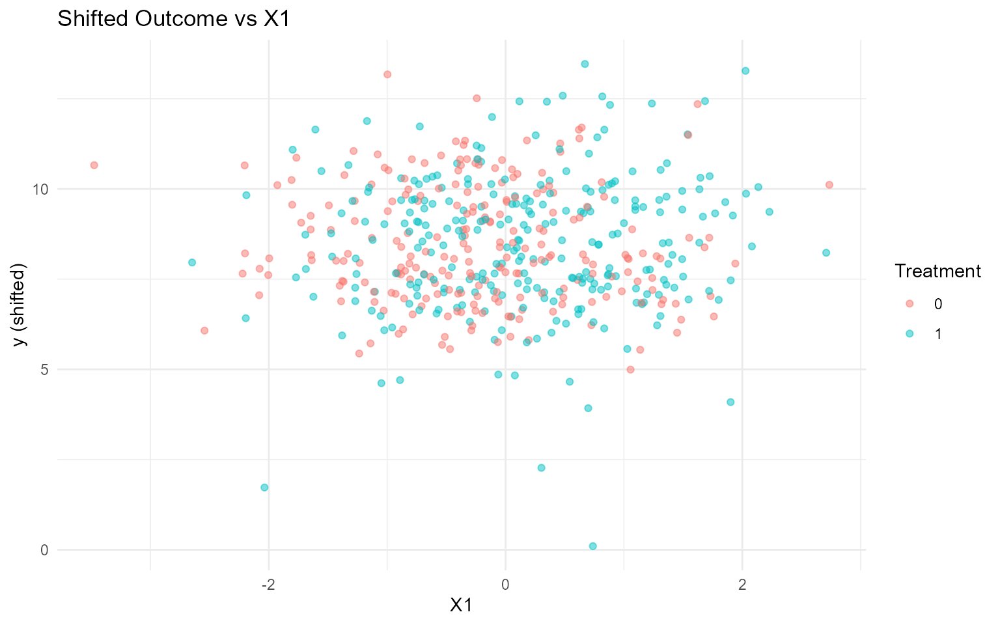
Model A: Treated SB, Control CRP (Amoroso + GPD)
param_specs_gpd <- list(
gpd = list(
threshold = list(
mode = "dist",
dist = "lognormal",
args = list(meanlog = log(max(u_threshold, .Machine$double.eps)), sdlog = 0.25)
)
)
)
bundle_sb_crp <- build_causal_bundle(
y = y,
T = T,
X = X,
kernel = c("amoroso", "amoroso"),
backend = c("sb", "crp"),
PS = "logit",
GPD = c(TRUE, TRUE),
components = c(5, 5),
param_specs = param_specs_gpd,
mcmc_outcome = list(niter = 2500, nburnin = 500, nchains = 1, thin = 1, seed = 1),
mcmc_ps = list(niter = 2500, nburnin = 500, nchains = 1, thin = 1, seed = 1)
)
bundle_sb_crpDPmixGPD causal bundle
PS model: disabled
Outcome (treated): backend = sb | kernel = amoroso
Outcome (control): backend = crp | kernel = amoroso
GPD tail (treated/control): TRUE / TRUE
components (treated/control): 5 / 5
Outcome PS included: FALSE
epsilon (treated/control): 0.025 / 0.025
n (control) = 232 | n (treated) = 268
summary(bundle_sb_crp)DPmixGPD causal bundle summary
DPmixGPD causal bundle
PS model: disabled
Outcome (treated): backend = sb | kernel = amoroso
Outcome (control): backend = crp | kernel = amoroso
GPD tail (treated/control): TRUE / TRUE
components (treated/control): 5 / 5
Outcome PS included: FALSE
epsilon (treated/control): 0.025 / 0.025
n (control) = 232 | n (treated) = 268
fit_sb_crp <- run_mcmc_causal(bundle_sb_crp)[MCMC] Creating NIMBLE model...[MCMC] NIMBLE model created successfully.
[MCMC] Configuring MCMC...
===== Monitors =====
thin = 1: alpha, beta_tail_scale, loc, scale, shape1, shape2, tail_shape, threshold, z
===== Samplers =====
RW sampler (6)
- threshold
- beta_tail_scale[] (4 elements)
- tail_shape
CRP_concentration sampler (1)
- alpha
CRP_cluster_wrapper sampler (20)
- loc[] (5 elements)
- scale[] (5 elements)
- shape1[] (5 elements)
- shape2[] (5 elements)
CRP sampler (1)
- z[1:232]
[MCMC] MCMC configured.
[MCMC] Building MCMC object...[MCMC] MCMC object built.
[MCMC] Attempting NIMBLE compilation (this may take a minute)...
[MCMC] Compiling model...[MCMC] Compiling MCMC sampler...[MCMC] Compilation successful.|-------------|-------------|-------------|-------------|
| [Warning] CRP_sampler: This MCMC is not for a proper model. The MCMC attempted to use more components than the number of cluster parameters. Please increase the number of cluster parameters.
-------------------------------------------------------|
[MCMC] MCMC execution complete. Processing results...[MCMC] Creating NIMBLE model...[MCMC] NIMBLE model created successfully.
[MCMC] Configuring MCMC...
===== Monitors =====
thin = 1: alpha, beta_loc, beta_scale, beta_tail_scale, shape1, shape2, tail_shape, threshold, w, z
===== Samplers =====
RW sampler (61)
- alpha
- shape1[] (5 elements)
- shape2[] (5 elements)
- beta_loc[] (20 elements)
- beta_scale[] (20 elements)
- threshold
- beta_tail_scale[] (4 elements)
- tail_shape
- v[] (4 elements)
categorical sampler (268)
- z[] (268 elements)
[MCMC] MCMC configured.
[MCMC] Building MCMC object...
[MCMC] MCMC object built.
[MCMC] Attempting NIMBLE compilation (this may take a minute)...
[MCMC] Compiling model...[MCMC] Compiling MCMC sampler...[MCMC] Compilation successful.|-------------|-------------|-------------|-------------|
|-------------------------------------------------------|
[MCMC] MCMC execution complete. Processing results...
summary(fit_sb_crp)
-- Outcome fits --
[control]
MixGPD fit | backend: Chinese Restaurant Process | kernel: Amoroso Distribution | GPD tail: TRUE
n = 232 | components = 5 | epsilon = 0.025
MCMC: niter=2500, nburnin=500, thin=1, nchains=1
Fit
Use summary() for posterior summaries; plot() for diagnostics; predict() for predictions.
[treated]
MixGPD fit | backend: Stick-Breaking Process | kernel: Amoroso Distribution | GPD tail: TRUE
n = 268 | components = 5 | epsilon = 0.025
MCMC: niter=2500, nburnin=500, thin=1, nchains=1
Fit
Use summary() for posterior summaries; plot() for diagnostics; predict() for predictions.
params(fit_sb_crp)Posterior mean parameters (causal)
[treated]
Posterior mean parameters
$alpha
[1] 0.6522
$w
[1] 0.8047
$beta_loc
x1 x2 x3 x4
comp1 0.1815 0.5934 0.0932 0.6064
comp2 0.7532 -0.6500 -0.3995 2.7063
comp3 0.0649 0.6424 -0.1371 0.5915
comp4 0.4177 -0.0813 0.3858 -0.0447
comp5 0.1086 0.0129 -0.2786 0.4027
$beta_scale
x1 x2 x3 x4
comp1 -0.5327 -0.1020 -0.7913 0.6659
comp2 -0.1070 0.0591 0.0979 -0.8481
comp3 -0.2930 -0.0124 -0.1288 -0.0472
comp4 -0.3084 0.2436 -0.3645 0.2645
comp5 -0.4055 0.1748 0.3110 -0.0215
$shape1
[1] 8.524
$shape2
[1] 0.8242
$beta_tail_scale
[1] 0.04707 0.02875 0.05825 1.10900
$tail_shape
[1] 0.04245
[control]
Posterior mean parameters
$alpha
[1] 0.2132
$w
[1] 0.9583
$loc
[1] 4.355
$scale
[1] 1.714
$shape1
[1] 3.467
$shape2
[1] 1.418
$beta_tail_scale
[1] 0.28210 0.14660 0.01011 -0.21720
$tail_shape
[1] 0.02556
plot(fit_sb_crp, params = "loc", family = "traceplot")
=== treated ===
=== traceplot ===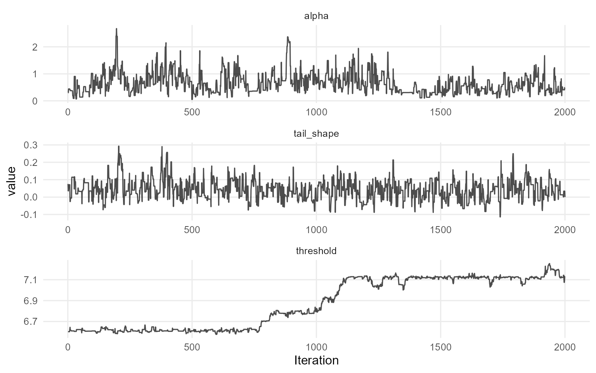
=== control ===
=== traceplot ===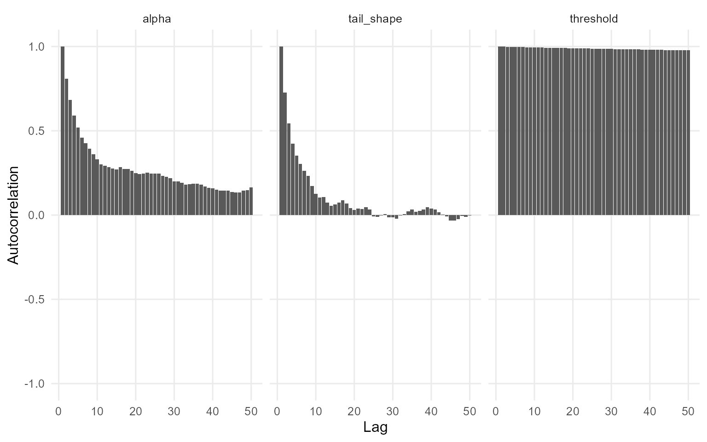
plot(fit_sb_crp, params = "scale", family = "caterpillar")
=== treated ===
=== caterpillar ===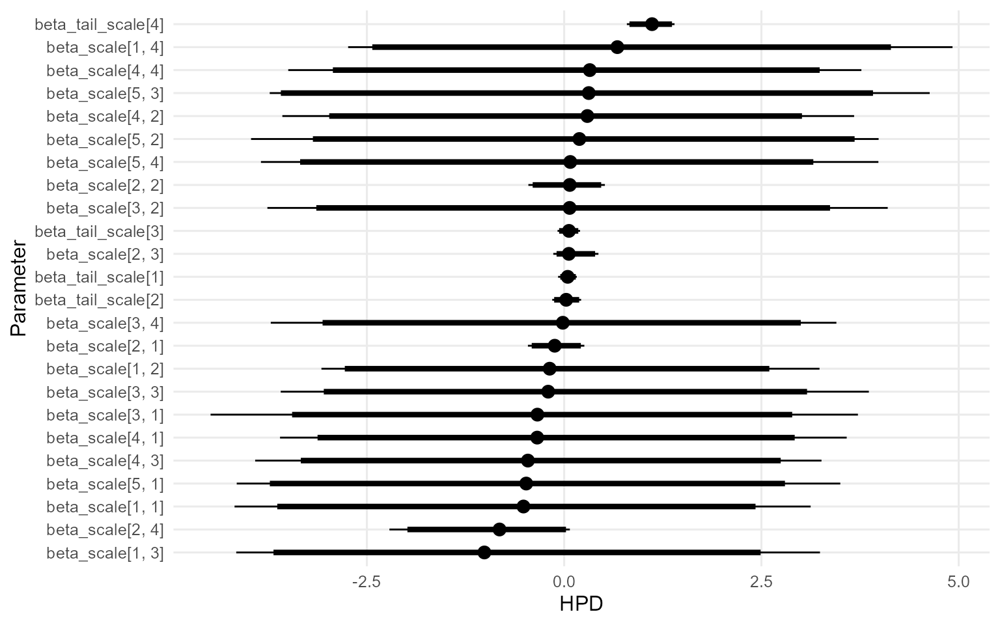
=== control ===
=== caterpillar ===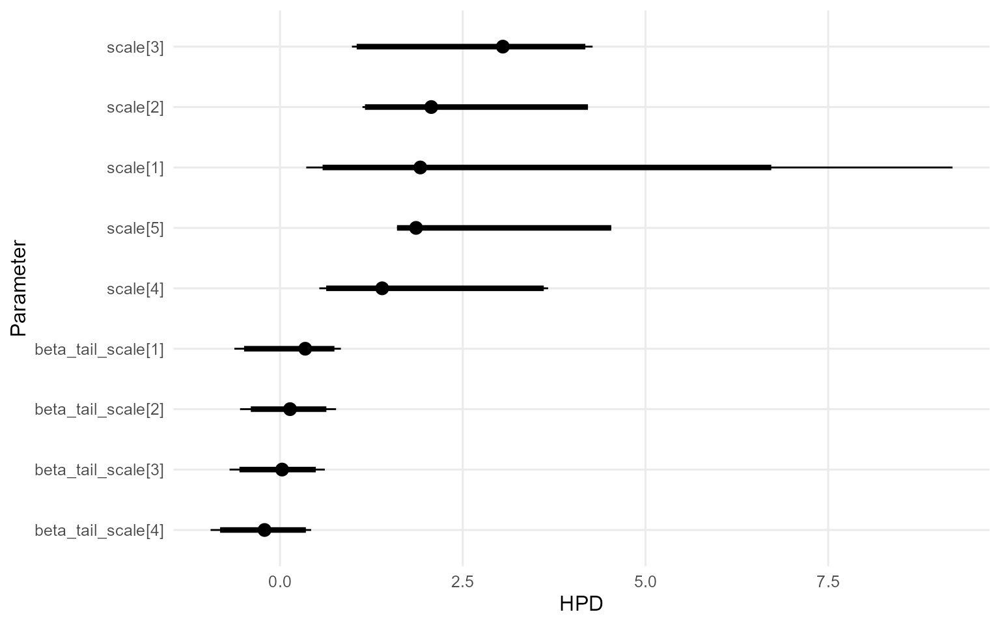
pred_mean_sb_crp <- predict(fit_sb_crp, x = x_eval, type = "mean",
interval = "credible", nsim_mean = 100)
plot(pred_mean_sb_crp)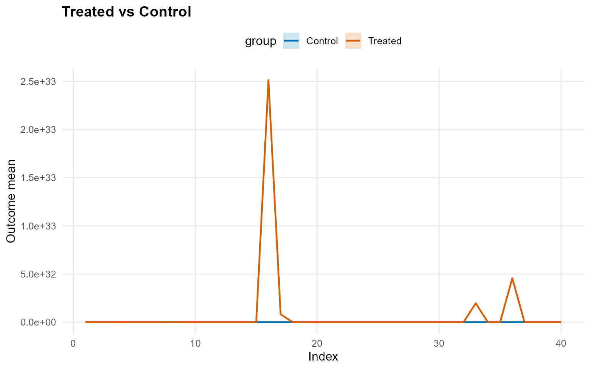

pred_q_sb_crp <- predict(fit_sb_crp, x = x_eval, type = "quantile",
p = 0.5, interval = "credible")
plot(pred_q_sb_crp)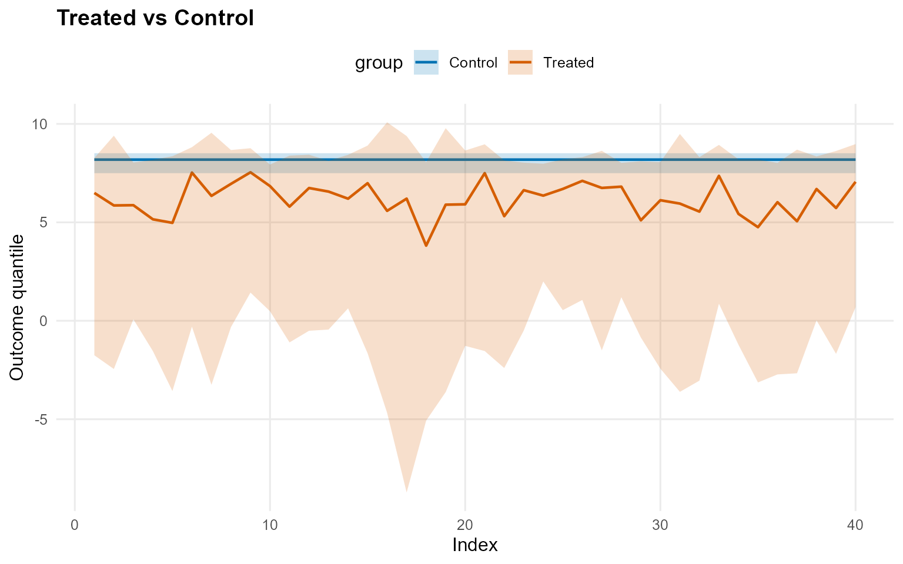
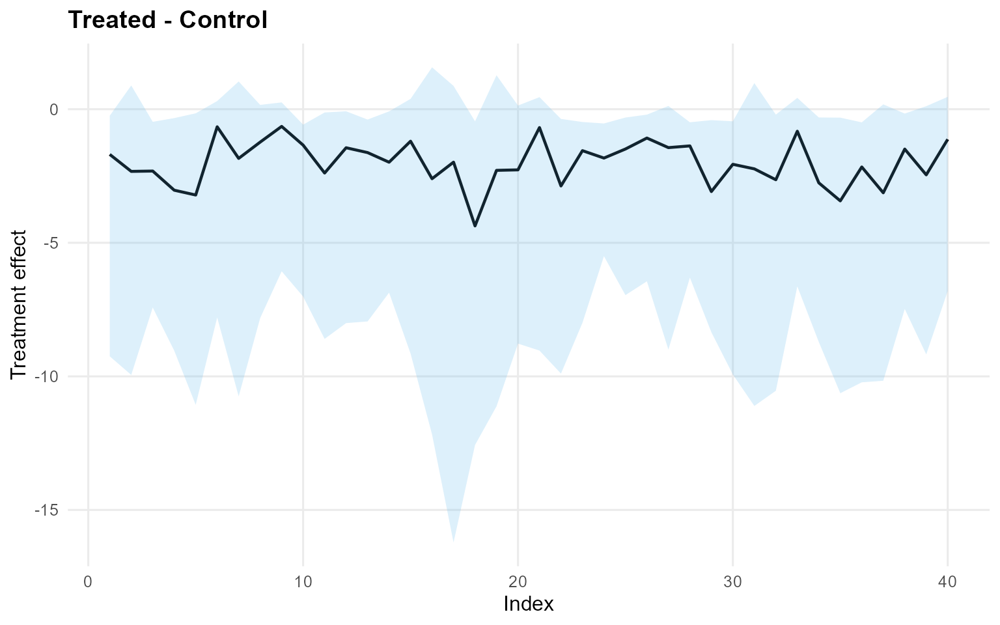
pred_d_sb_crp <- predict(fit_sb_crp, x = x_eval, y = y_eval,
type = "density", interval = "credible")
plot(pred_d_sb_crp)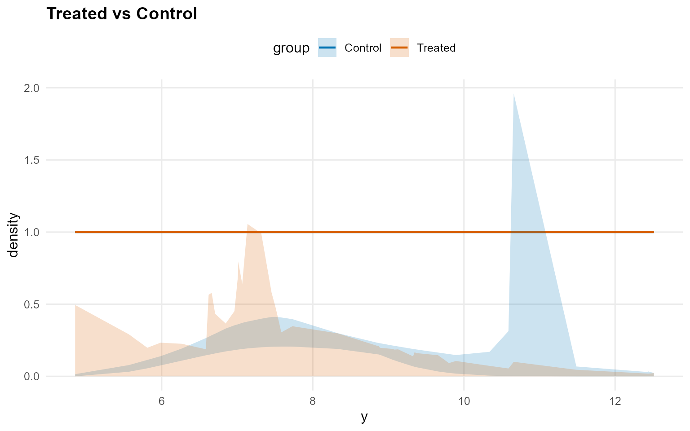
pred_surv_sb_crp <- predict(fit_sb_crp, x = x_eval, y = y_eval,
type = "survival", interval = "credible")
plot(pred_surv_sb_crp)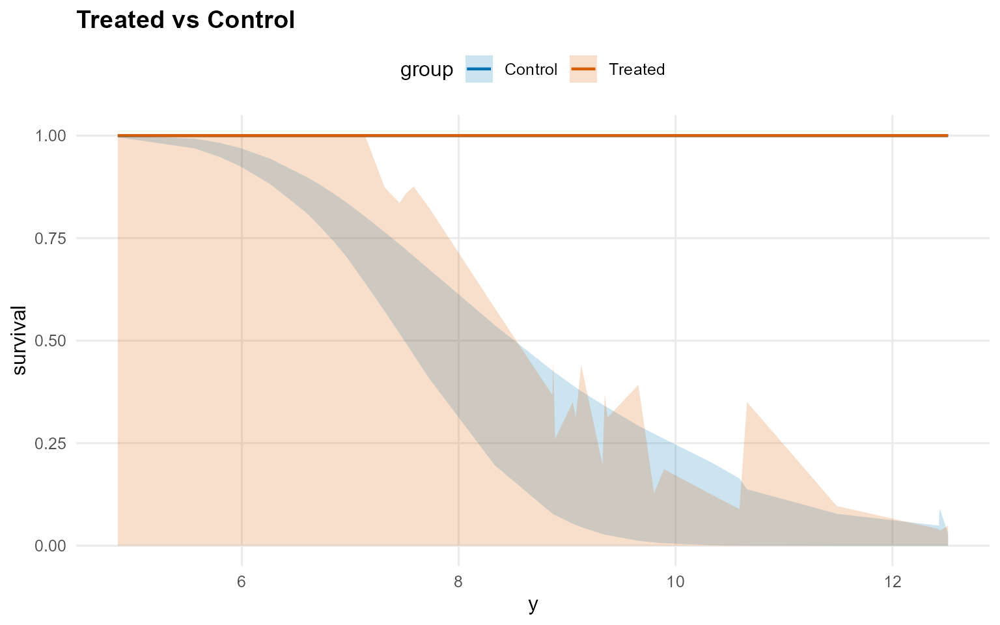
ate_sb_crp <- ate(fit_sb_crp, newdata = x_eval,
interval = "credible", nsim_mean = 100)
print(ate_sb_crp)ATE (Average Treatment Effect)
Prediction points: 40
Conditional (covariates): YES
Propensity score used: NO
Posterior mean draws: 100
Credible interval: credible (95%)
ATE estimates (treated - control):
id estimate lower upper
1 2.581014e+07 -10.058 1.968
2 4.689608e+18 -11.367 3.807
3 6.748636e+27 -8.916 1.752
4 5.608703e+12 -10.455 2.148
5 7.337398e+18 -12.359 2.499
6 1.863384e+09 -8.680 2.809
... (34 more rows)
summary(ate_sb_crp)ATE Summary
==================================================
Prediction points: 40
Conditional: YES | PS used: NO
Posterior mean draws: 100
Interval: credible (95%)
Model specification:
Backend (trt/con): sb / crp
Kernel (trt/con): amoroso / amoroso
GPD tail (trt/con): YES / YES
ATE statistics:
Mean: 7.46634083157349e+31 | Median: 1.11937649685337e+22
Range: [25810139.203, 2.97090867303624e+33]
SD: 4.69683170335436e+32
Credible interval width:
Mean: 13.236 | Median: 12.569
Range: [9.751, 20.666]
ate_plots_sb_crp <- plot(ate_sb_crp)
ate_plots_sb_crp$treatment_effect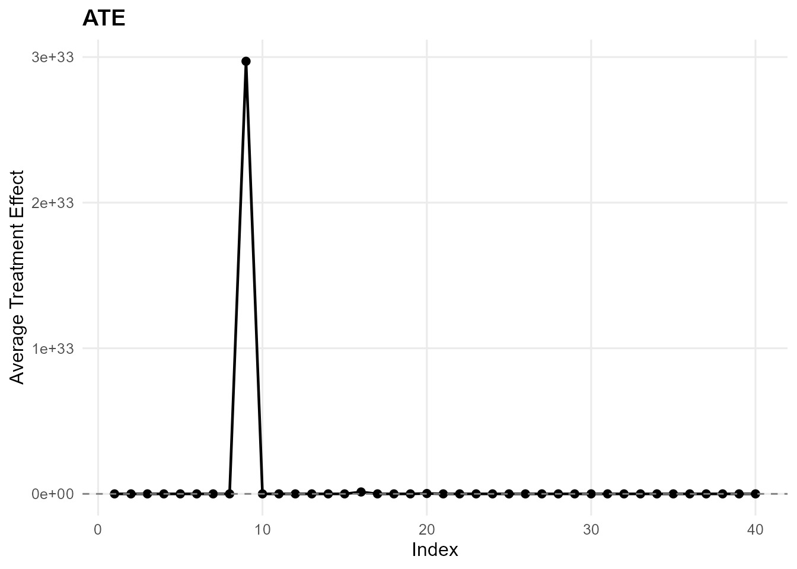
qte_sb_crp <- qte(fit_sb_crp, probs = c(0.25, 0.5, 0.75),
newdata = x_eval, interval = "credible")
print(qte_sb_crp)QTE (Quantile Treatment Effect)
Prediction points: 40
Quantile grid: 0.25, 0.5, 0.75
Conditional (covariates): YES
Propensity score used: NO
Credible interval: credible (95%)
QTE estimates (treated - control):
index id estimate lower upper
0.25 1 -1.237 -9.456 0.507
0.25 2 -2.178 -9.763 0.913
0.25 3 -1.848 -7.410 0.407
0.25 4 -2.499 -8.852 0.469
0.25 5 -2.607 -10.749 0.536
0.25 6 -0.522 -7.722 0.707
... (114 more rows)
summary(qte_sb_crp)QTE Summary
==================================================
Prediction points: 40 | Quantiles: 3
Quantile grid: 0.25, 0.5, 0.75
Conditional: YES | PS used: NO
Interval: credible (95%)
Model specification:
Backend (trt/con): sb / crp
Kernel (trt/con): amoroso / amoroso
GPD tail (trt/con): YES / YES
QTE by quantile:
quantile mean_qte median_qte min_qte max_qte sd_qte
0.25 -1.673 -1.634 -3.787 -0.522 0.757
0.50 -2.004 -1.983 -4.369 -0.644 0.841
0.75 -2.155 -2.074 -4.982 -0.360 1.051
Credible interval width:
Mean: 10.506 | Median: 10.119
Range: [5.913, 21.099]
qte_plots_sb_crp <- plot(qte_sb_crp)
qte_plots_sb_crp$treatment_effect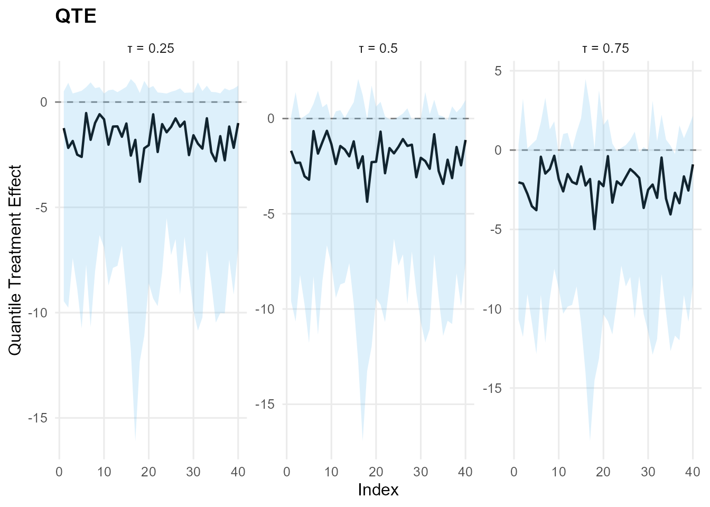
Model B: Treated CRP, Control SB (Amoroso + GPD)
bundle_crp_sb <- build_causal_bundle(
y = y,
T = T,
X = X,
kernel = c("amoroso", "amoroso"),
backend = c("crp", "sb"),
PS = "logit",
GPD = c(TRUE, TRUE),
components = c(5, 5),
param_specs = param_specs_gpd,
mcmc_outcome = list(niter = 2500, nburnin = 500, nchains = 1, thin = 1, seed = 2),
mcmc_ps = list(niter = 2500, nburnin = 500, nchains = 1, thin = 1, seed = 2)
)
bundle_crp_sbDPmixGPD causal bundle
PS model: disabled
Outcome (treated): backend = crp | kernel = amoroso
Outcome (control): backend = sb | kernel = amoroso
GPD tail (treated/control): TRUE / TRUE
components (treated/control): 5 / 5
Outcome PS included: FALSE
epsilon (treated/control): 0.025 / 0.025
n (control) = 232 | n (treated) = 268
summary(bundle_crp_sb)DPmixGPD causal bundle summary
DPmixGPD causal bundle
PS model: disabled
Outcome (treated): backend = crp | kernel = amoroso
Outcome (control): backend = sb | kernel = amoroso
GPD tail (treated/control): TRUE / TRUE
components (treated/control): 5 / 5
Outcome PS included: FALSE
epsilon (treated/control): 0.025 / 0.025
n (control) = 232 | n (treated) = 268
fit_crp_sb <- run_mcmc_causal(bundle_crp_sb)[MCMC] Creating NIMBLE model...[MCMC] NIMBLE model created successfully.
[MCMC] Configuring MCMC...
===== Monitors =====
thin = 1: alpha, beta_loc, beta_scale, beta_tail_scale, shape1, shape2, tail_shape, threshold, w, z
===== Samplers =====
RW sampler (61)
- alpha
- shape1[] (5 elements)
- shape2[] (5 elements)
- beta_loc[] (20 elements)
- beta_scale[] (20 elements)
- threshold
- beta_tail_scale[] (4 elements)
- tail_shape
- v[] (4 elements)
categorical sampler (232)
- z[] (232 elements)
[MCMC] MCMC configured.
[MCMC] Building MCMC object...
[MCMC] MCMC object built.
[MCMC] Attempting NIMBLE compilation (this may take a minute)...
[MCMC] Compiling model...[MCMC] Compiling MCMC sampler...[MCMC] Compilation successful.|-------------|-------------|-------------|-------------|
|-------------------------------------------------------|
[MCMC] MCMC execution complete. Processing results...[MCMC] Creating NIMBLE model...[MCMC] NIMBLE model created successfully.
[MCMC] Configuring MCMC...
===== Monitors =====
thin = 1: alpha, beta_tail_scale, loc, scale, shape1, shape2, tail_shape, threshold, z
===== Samplers =====
RW sampler (6)
- threshold
- beta_tail_scale[] (4 elements)
- tail_shape
CRP_concentration sampler (1)
- alpha
CRP_cluster_wrapper sampler (20)
- loc[] (5 elements)
- scale[] (5 elements)
- shape1[] (5 elements)
- shape2[] (5 elements)
CRP sampler (1)
- z[1:268]
[MCMC] MCMC configured.
[MCMC] Building MCMC object...[MCMC] MCMC object built.
[MCMC] Attempting NIMBLE compilation (this may take a minute)...
[MCMC] Compiling model...[MCMC] Compiling MCMC sampler...[MCMC] Compilation successful.|-------------|-------------|-------------|-------------|
| [Warning] CRP_sampler: This MCMC is not for a proper model. The MCMC attempted to use more components than the number of cluster parameters. Please increase the number of cluster parameters.
-------------------------------------------------------|
[MCMC] MCMC execution complete. Processing results...
summary(fit_crp_sb)
-- Outcome fits --
[control]
MixGPD fit | backend: Stick-Breaking Process | kernel: Amoroso Distribution | GPD tail: TRUE
n = 232 | components = 5 | epsilon = 0.025
MCMC: niter=2500, nburnin=500, thin=1, nchains=1
Fit
Use summary() for posterior summaries; plot() for diagnostics; predict() for predictions.
[treated]
MixGPD fit | backend: Chinese Restaurant Process | kernel: Amoroso Distribution | GPD tail: TRUE
n = 268 | components = 5 | epsilon = 0.025
MCMC: niter=2500, nburnin=500, thin=1, nchains=1
Fit
Use summary() for posterior summaries; plot() for diagnostics; predict() for predictions.
params(fit_crp_sb)Posterior mean parameters (causal)
[treated]
Posterior mean parameters
$alpha
[1] 0.6378
$w
[1] 0.662
$loc
[1] 5.617
$scale
[1] 2.078
$shape1
[1] 2.084
$shape2
[1] 1.789
$beta_tail_scale
[1] 0.06430 -0.09033 0.12000 -0.09931
$tail_shape
[1] -0.00839
[control]
Posterior mean parameters
$alpha
[1] 0.3475
$w
[1] 0.9614
$beta_loc
x1 x2 x3 x4
comp1 -0.1198 -0.0434 1.8418 1.3384
comp2 -0.2500 0.0317 0.2836 0.1584
comp3 -0.0343 -0.0763 0.2136 -0.0024
comp4 -0.0930 -0.2598 -0.0409 0.0537
comp5 -0.0935 -0.0966 0.0186 0.0171
$beta_scale
x1 x2 x3 x4
comp1 0.0051 -0.0655 -0.6749 -0.2475
comp2 -0.0604 0.0294 0.0090 0.1069
comp3 -0.0726 -0.0421 -0.0786 0.2108
comp4 0.0625 -0.1077 -0.1326 0.1364
comp5 0.0409 0.0977 -0.1192 -0.0357
$shape1
[1] 8.296
$shape2
[1] 0.7804
$beta_tail_scale
[1] -0.10700 -0.02478 -0.02101 1.22300
$tail_shape
[1] 0.004585
plot(fit_crp_sb, family = "traceplot")
=== treated ===
=== traceplot ===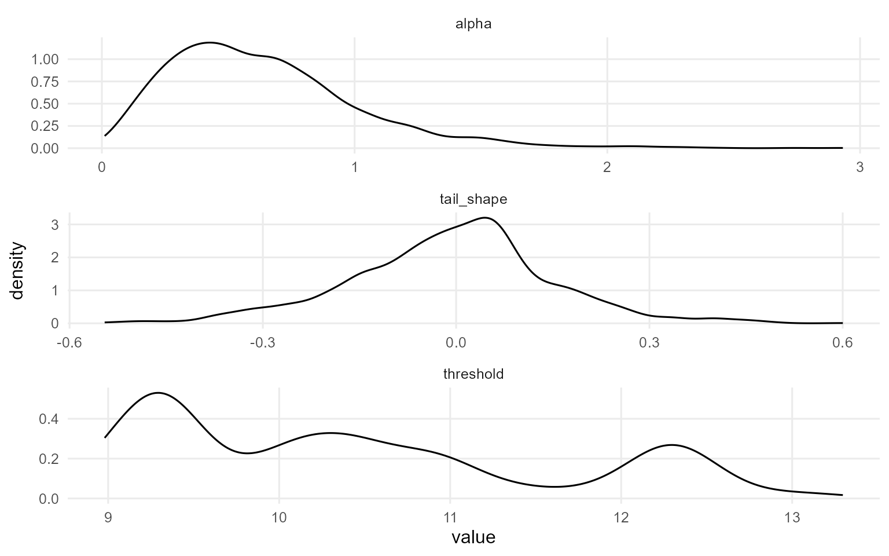
=== control ===
=== traceplot ===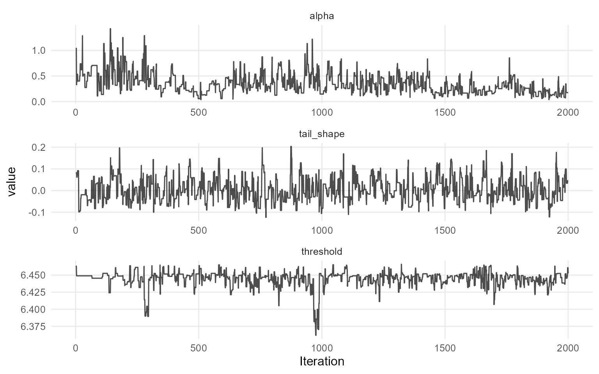
pred_mean_crp_sb <- predict(fit_crp_sb, x = x_eval, type = "mean",
interval = "credible", nsim_mean = 100)
plot(pred_mean_crp_sb)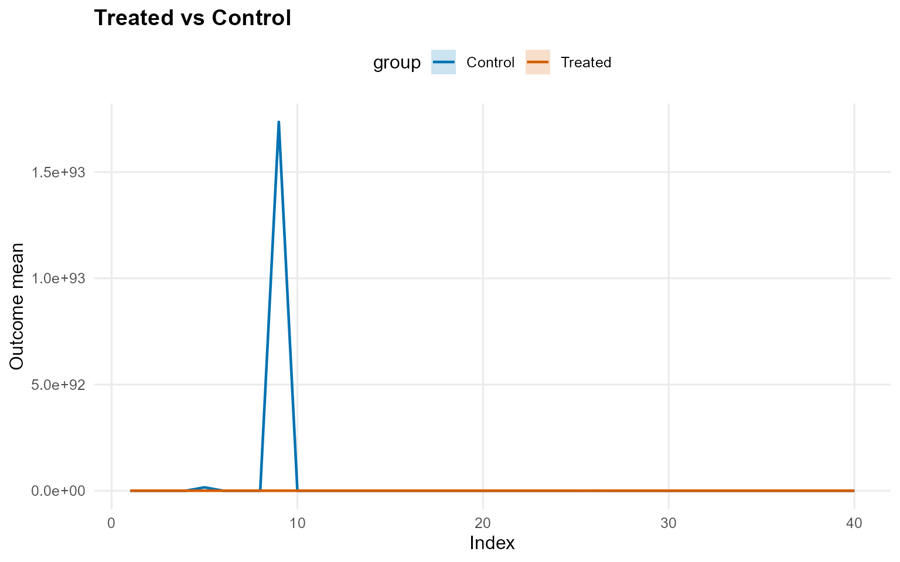
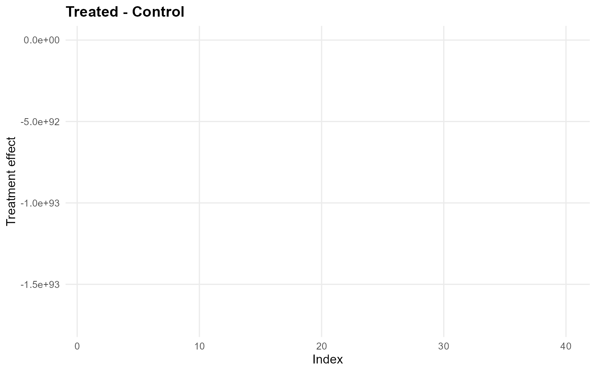
pred_q_crp_sb <- predict(fit_crp_sb, x = x_eval, type = "quantile",
p = 0.5, interval = "credible")
plot(pred_q_crp_sb)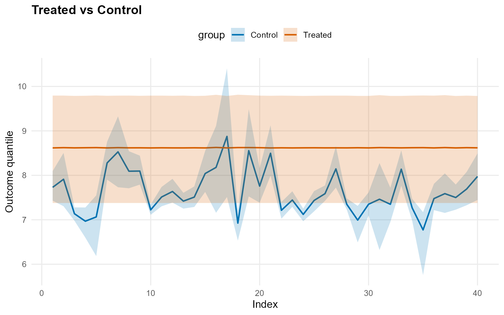

pred_d_crp_sb <- predict(fit_crp_sb, x = x_eval, y = y_eval,
type = "density", interval = "credible")
plot(pred_d_crp_sb)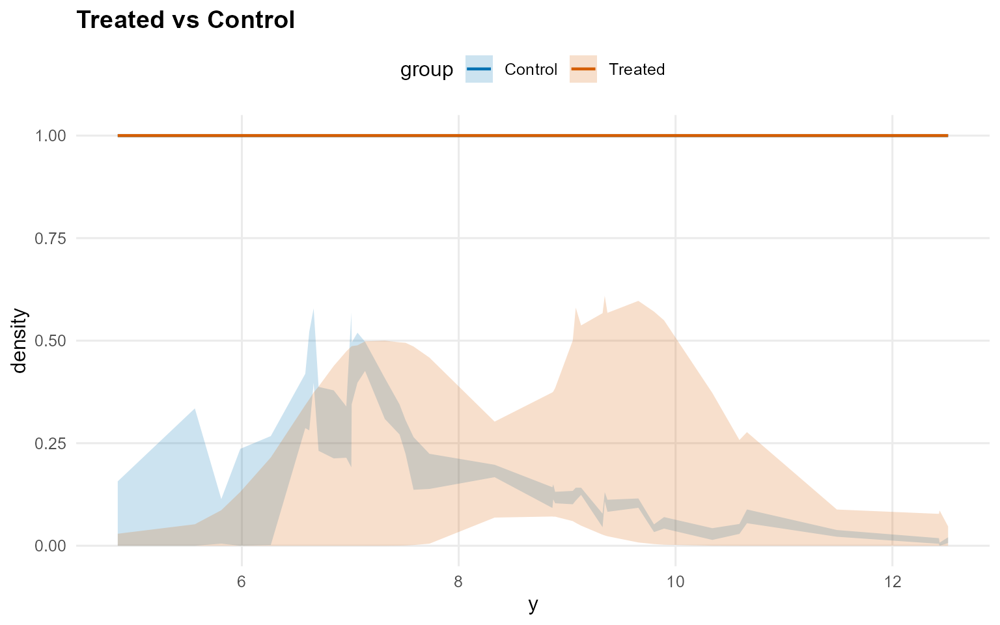
pred_surv_crp_sb <- predict(fit_crp_sb, x = x_eval, y = y_eval,
type = "survival", interval = "credible")
plot(pred_surv_crp_sb)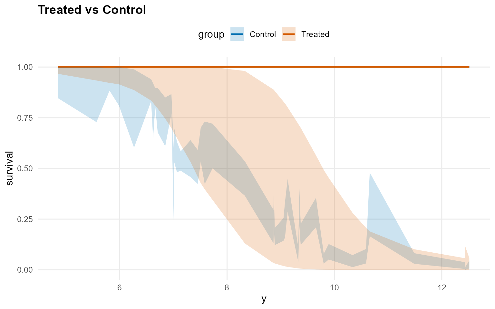
ate_crp_sb <- ate(fit_crp_sb, newdata = x_eval,
interval = "credible", nsim_mean = 100)
print(ate_crp_sb)ATE (Average Treatment Effect)
Prediction points: 40
Conditional (covariates): YES
Propensity score used: NO
Posterior mean draws: 100
Credible interval: credible (95%)
ATE estimates (treated - control):
id estimate lower upper
1 -3.399077e+76 -1.235 2.177
2 -6.082183e+03 -2.059 1.672
3 -2.053348e+70 -0.801 2.558
4 -4.897980e+66 -0.806 2.869
5 -1.524862e+56 -0.803 3.410
6 -9.169515e+91 -2.334 1.327
... (34 more rows)
summary(ate_crp_sb)ATE Summary
==================================================
Prediction points: 40
Conditional: YES | PS used: NO
Posterior mean draws: 100
Interval: credible (95%)
Model specification:
Backend (trt/con): crp / sb
Kernel (trt/con): amoroso / amoroso
GPD tail (trt/con): YES / YES
ATE statistics:
Mean: -6.04065080680751e+96 | Median: -7363264.563
Range: [-2.41625940577152e+98, 0.702]
SD: 3.8204415328467e+97
Credible interval width:
Mean: 3.718 | Median: 3.653
Range: [3.281, 5.508]
ate_plots_crp_sb <- plot(ate_crp_sb)
ate_plots_crp_sb$treatment_effect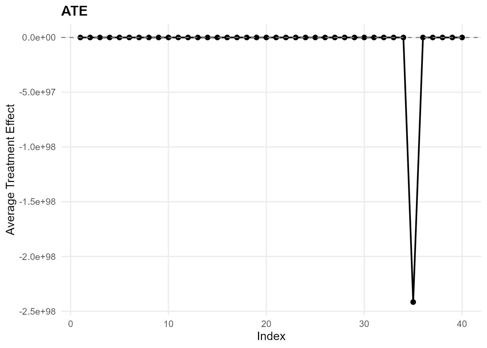
qte_crp_sb <- qte(fit_crp_sb, probs = c(0.25, 0.5, 0.75),
newdata = x_eval, interval = "credible")
print(qte_crp_sb)QTE (Quantile Treatment Effect)
Prediction points: 40
Quantile grid: 0.25, 0.5, 0.75
Conditional (covariates): YES
Propensity score used: NO
Credible interval: credible (95%)
QTE estimates (treated - control):
index id estimate lower upper
0.25 1 0.784 -0.143 2.313
0.25 2 0.904 -0.181 2.601
0.25 3 1.066 0.131 2.572
0.25 4 1.352 0.263 3.099
0.25 5 1.242 0.112 2.937
0.25 6 0.577 -0.378 2.134
... (114 more rows)
summary(qte_crp_sb)QTE Summary
==================================================
Prediction points: 40 | Quantiles: 3
Quantile grid: 0.25, 0.5, 0.75
Conditional: YES | PS used: NO
Interval: credible (95%)
Model specification:
Backend (trt/con): crp / sb
Kernel (trt/con): amoroso / amoroso
GPD tail (trt/con): YES / YES
QTE by quantile:
quantile mean_qte median_qte min_qte max_qte sd_qte
0.25 0.920 0.912 0.490 1.527 0.235
0.50 0.975 1.108 -0.258 1.851 0.503
0.75 0.538 0.791 -2.206 2.117 1.032
Credible interval width:
Mean: 2.797 | Median: 2.641
Range: [2.419, 5.927]
qte_plots_crp_sb <- plot(qte_crp_sb)
qte_plots_crp_sb$treatment_effect